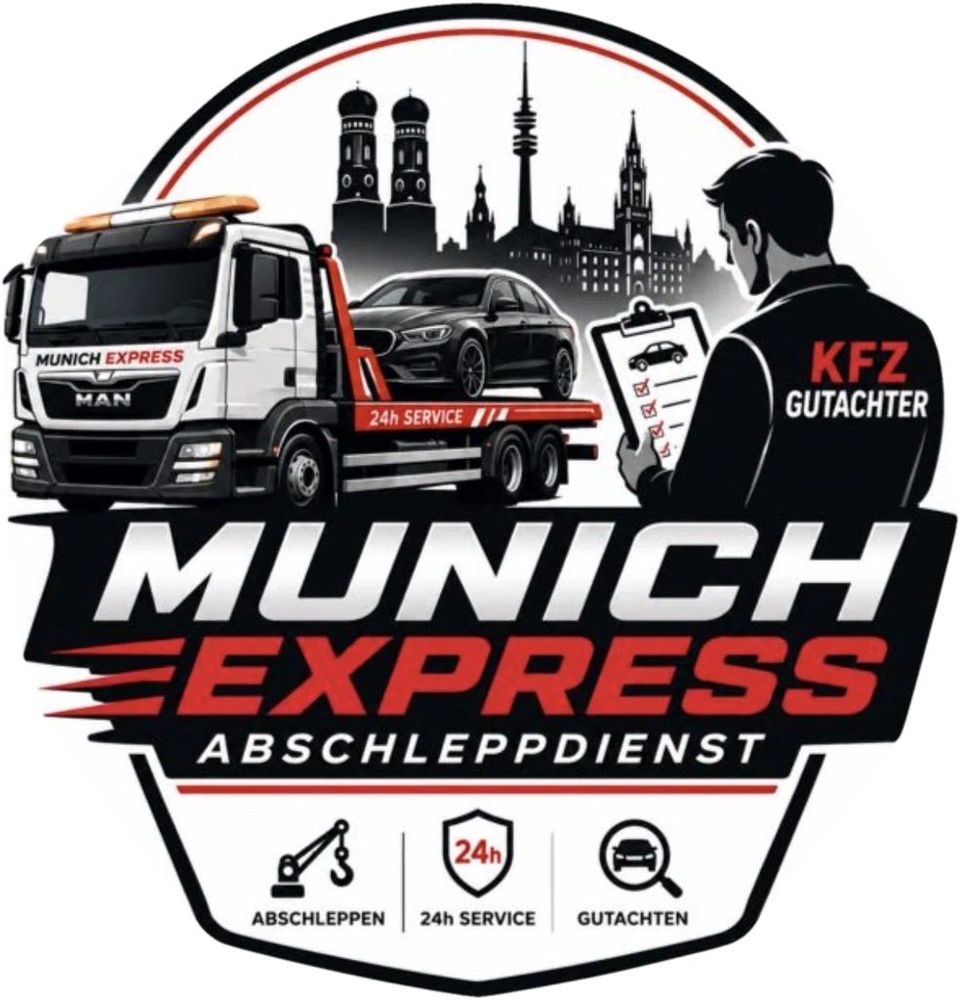

Mit jahrelanger Erfahrung als Kfz-Sachverständige und einer langjährigen Tätigkeit im gesamten Kfz-Bereich stehen wir für Kompetenz, Präzision und echte Leidenschaft rund ums Automobil. Unsere tägliche Arbeit basiert nicht nur auf fachlichem Know-how, sondern auch auf einer ausgeprägten Begeisterung für Fahrzeuge und Technik. Genau diese Kombination ermöglicht es uns, Fahrzeugschäden, Besonderheiten und technische Zustände schnell, zuverlässig und professionell zu erkennen und fachgerecht zu bewerten.
Als zertifizierte Kfz-Sachverständige legen wir großen Wert auf unabhängige, objektive und nachvollziehbare Gutachten. Dabei arbeiten wir mit modernem und professionellem Equipment, um Schäden, Fahrzeugzustände und technische Details präzise zu dokumentieren und auszuwerten. Durch unsere praktische Erfahrung im Umgang mit unterschiedlichsten Fahrzeugtypen verfügen wir über ein geschultes Auge für Details und eine realistische Einschätzung von Schäden und Fahrzeugwerten.
Besonders im Bereich der Gebrauchtwagenprüfung und Fahrzeugbewertung profitieren unsere Kunden von unserer langjährigen Erfahrung und unserer hohen Kfz-Affinität. Für uns ist diese Tätigkeit nicht nur ein Beruf, sondern eine Leidenschaft, die sich in unserer sorgfältigen und professionellen Arbeitsweise widerspiegelt.

Vertrauen, Qualität und eine persönliche Betreuung stehen bei uns an erster Stelle. Unser Ziel ist es, unseren Kunden jederzeit eine zuverlässige, transparente und fachgerechte Unterstützung rund um ihr Fahrzeug zu bieten.